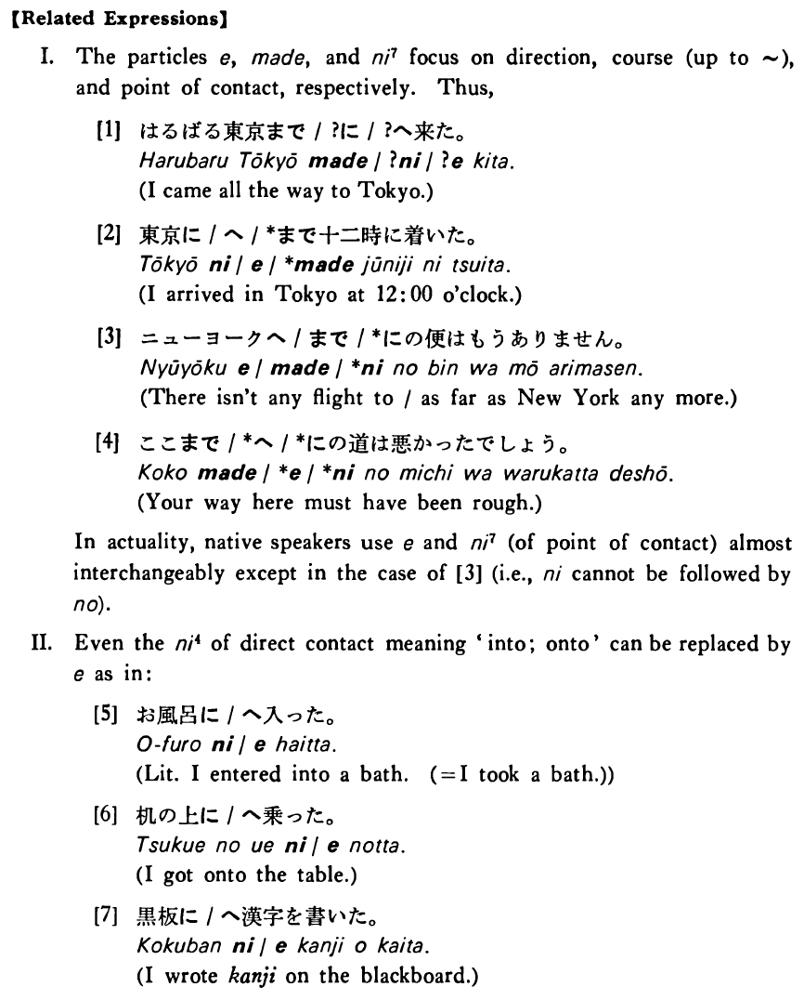

- (ks).
- 私は先週京都へ旅行に行った・行きました。
- I went on a trip to Kyoto last week.
- (a).
- 私は札幌のうちへ飛行機で帰った。
- I went back home to Sapporo by plane.
- (b).
- 地震だったのでいそいで外へ出た。
- It was an earthquake, so I went outside quickly.
- (c).
- 父へ手紙を出したが、まだ返事が来ない。
- I sent a letter to my father, but his reply has not come yet.
